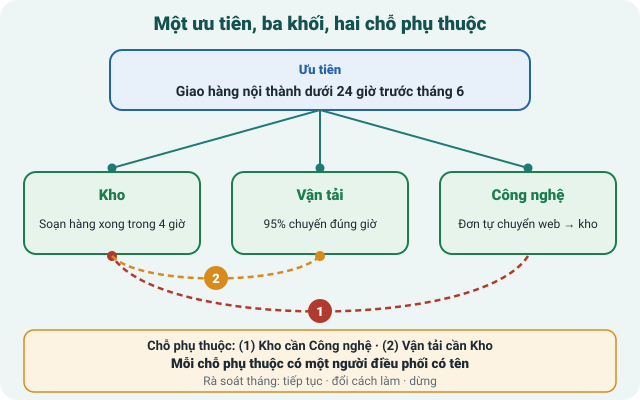

K5 · Lập kế hoạch và giữ cam kết công việc › Bậc 5 Dẫn dắt
Biến chiến lược thành việc làm của từng khối
Bài này làm Tờ 3: Bảng chiến lược thành việc. Mẫu in. Ở khóa N5, bạn đã viết Mục tiêu đội một trang. Bài này làm việc đó cho nhiều khối cùng lúc.
1. Mục tiêu
- Chuyển một ưu tiên chiến lược thành 3–5 kết quả đo được, chia cho từng khối, có ghi chỗ phụ thuộc.
- Thiết lập buổi rà soát hằng tháng có tiêu chí tiếp tục, đổi hoặc dừng viết trước.
2. Khởi động truy xuất
- Vì sao nên ước tính từ các trường hợp tương tự trước khi nhìn kế hoạch của mình?
- Trong pre-mortem, vì sao người chức cao nhất nói sau cùng?
Đáp án
- Kế hoạch của mình thường lạc quan. Dữ liệu thật là điểm xuất phát khách quan hơn.
- Để người khác không nói theo, và dám nêu lý do khác.
Xem lại: Quyết định chiến lược.
3. Giải thích
Nhiều chiến lược tốt vẫn thất bại ở khâu thực hiện. Lý do hay gặp: quá nhiều ưu tiên, mỗi khối hiểu một kiểu, không ai lo chỗ hai khối gặp nhau.
Bước 1. Ít ưu tiên. Chọn tối đa 3 ưu tiên cho năm. Mỗi ưu tiên viết thành kết quả đo được, có ngày. "Tăng trải nghiệm khách hàng" chưa phải kết quả. "Giảm thời gian giao hàng nội thành xuống dưới 24 giờ trước tháng 6" là kết quả.
Bước 2. Chia cho từng khối. Mỗi khối viết phần đóng góp của mình: kết quả gì, đo bằng gì. Khối cũng ghi: mình cần khối nào, cần gì, khi nào.

Chỗ phụ thuộc là nơi hay vỡ. Mỗi chỗ phụ thuộc cần một người điều phối có tên. Nếu không, mỗi khối sẽ chờ khối kia.
Bước 3. Nhịp rà soát. Một buổi mỗi tháng, chừng 60–90 phút.
- Số liệu gửi trước 2 ngày. Không đọc báo cáo trong buổi họp.
- Chỉ bàn chỉ số lệch kế hoạch và chỗ phụ thuộc đang tắc.
- Mỗi ưu tiên ra một trong ba quyết định: tiếp tục, đổi cách làm, hoặc dừng.
Tiêu chí viết trước. Ngay khi đặt ưu tiên, ghi: "Đến tháng 3 mà chỉ số chưa đạt mức này, ta đổi cách làm." Viết lúc đầu óc còn khách quan, trước khi đã tốn nhiều công sức.
Tờ 3. Bảng chiến lược thành việc
- Ưu tiênKết quả đo được, có ngày.
- Phần của từng khốiKết quả, chỉ số, người chịu.
- Chỗ phụ thuộcAi cần ai, cần gì, người điều phối.
- Tiêu chíMức nào thì tiếp tục, đổi, dừng.
Dừng một ưu tiên không phải thất bại. Tiếp tục một việc đã rõ là sai mới là lãng phí.
4. Ví dụ tại nơi làm việc Việt Nam
Tình huống giả định. Một công ty phân phối thiết bị điện ở Hà Nội có 5 khối. Năm nay ban điều hành có 7 "ưu tiên".
Tổng giám đốc, anh Đức, cùng ban điều hành gom lại còn 2 ưu tiên. Ưu tiên 1: tỷ lệ khách đặt lại đạt 60% trước tháng 12.
Mỗi khối viết phần mình. Bán hàng: gọi lại khách sau 30 ngày. Dịch vụ kỹ thuật: xử lý bảo hành trong 3 ngày. Kho: đủ hàng cho 50 mã bán chạy.
Chỗ phụ thuộc: dịch vụ kỹ thuật cần kho có sẵn linh kiện. Trưởng kho được giao điều phối.
Tiêu chí viết trước: tháng 4 mà tỷ lệ đặt lại dưới 45% thì đổi cách làm.
Tháng 4, tỷ lệ là 41%. Buổi rà soát không tranh luận lâu. Ban quyết đổi cách: thêm gói bảo trì định kỳ cho khách cũ.
Vì sao cách này tốt: ít ưu tiên, chỗ phụ thuộc có người lo. Tiêu chí có sẵn nên quyết nhanh, không đổ lỗi.
5. Thực hành
Tình huống giả định. Bạn là giám đốc điều hành một chuỗi phòng khám nha ở TP.HCM. Ưu tiên năm: giảm tỷ lệ khách hủy lịch từ 20% xuống 10% trước tháng 9.
Điền Tờ 3 cho 3 khối: chăm sóc khách hàng, chuyên môn, công nghệ. Ghi ít nhất một chỗ phụ thuộc và một tiêu chí đổi cách làm.
Gợi ý 1
Khách hủy lịch vì sao? Quên lịch, chờ lâu, giá không rõ. Mỗi lý do thuộc về khối nào?
Gợi ý 2
Tiêu chí đổi cách làm cần một mốc giữa năm và một mức số cụ thể.
Lời giải mẫu
- Chăm sóc khách hàng: nhắn nhắc lịch trước 24 giờ cho 100% lịch hẹn. Đo bằng tỷ lệ tin đã gửi.
- Chuyên môn: báo giá rõ trước khi điều trị. Thời gian chờ dưới 15 phút.
- Công nghệ: hệ thống đặt lịch tự gửi tin nhắc và cho khách đổi giờ.
- Chỗ phụ thuộc: chăm sóc khách hàng cần công nghệ làm xong tính năng nhắc lịch trước tháng 3. Người điều phối: trưởng công nghệ.
- Tiêu chí: tháng 5 mà tỷ lệ hủy còn trên 16% thì đổi cách làm.
(Số liệu là giả định.)
6. Tự kiểm tra
Chọn đáp án. Mỗi lựa chọn đều có giải thích.
Câu 1. Câu nào là một kết quả đo được của ưu tiên chiến lược?
-
Chưa đúng. Câu này chỉ nêu hướng đi. Không ai biết khi nào là đạt.
-
Đúng. Đúng. Có chỉ số, có mức, có ngày.
-
Chưa đúng. Không có chỉ số, không có ngày, không chia rõ cho ai.
Câu 2. Khối bán hàng chờ khối công nghệ làm tính năng mới. Hai bên đều nói đang chờ bên kia. Thiếu gì?
-
Chưa đúng. Có thể đúng, nhưng chưa có bằng chứng. Dấu hiệu "chờ nhau" chỉ ra vấn đề khác.
-
Đúng. Đúng. Chỗ phụ thuộc không có người lo thì mỗi khối sẽ chờ khối kia.
-
Chưa đúng. Họp đông không giải quyết được việc ai chịu trách nhiệm điều phối.
Câu 3. Buổi rà soát tháng thường kéo dài 3 giờ vì từng khối đọc báo cáo. Nên đổi thế nào?
-
Đúng. Đúng. Buổi họp dành để quyết, không phải để đọc.
-
Chưa đúng. Không có nhịp chung thì chỗ phụ thuộc giữa các khối sẽ không ai xem.
-
Chưa đúng. Vẫn dùng giờ họp để đọc. Thời gian quyết định vẫn bị chiếm.
Câu 4. Đến mốc, chỉ số thấp hơn tiêu chí đã viết. Khối phụ trách xin thêm 3 tháng. Nên làm gì?
-
Chưa đúng. Công sức đã bỏ ra không lấy lại được. Quyết định nên dựa vào dữ liệu về sau.
-
Đúng. Đúng. Tiêu chí viết trước giúp quyết khách quan. Gia hạn phải có lý do mới.
-
Chưa đúng. Chỉ số lệch chưa chắc do một người. Trước hết, xem cách làm có cần đổi không.
7. Phản tư
- Tổ chức bạn đang có bao nhiêu "ưu tiên"? Nếu chỉ giữ 3, bạn bỏ cái nào?
- Chỗ phụ thuộc nào giữa các khối đang không có người điều phối?
8. Áp dụng thật
Trong 7 ngày tới, chọn một ưu tiên của tổ chức. Điền Tờ 3 cùng trưởng các khối liên quan. Ghi tiêu chí đổi cách làm vào lịch rà soát tháng tới.
Mức bằng chứng. Cấu trúc bài dựa trên mô tả năng lực "Delivering at Pace" (UK Success Profiles) và "Achieving Results" (US OPM). Ba bước và Tờ 3 là cách làm do site đề xuất, chưa có nghiên cứu riêng kiểm chứng.
9. Siêu dữ liệu
| skill | K5 · Lập kế hoạch và giữ cam kết công việc |
|---|---|
| level | Bậc 5 · Dẫn dắt |
| group | N6 |
| framework_map | UK Civil Service Success Profiles: Delivering at Pace; US OPM ECQs (2025): Achieving Results; CSfW: 3a Plan and organise; SkillsFuture CCS: Self Management; WEF: Leadership and social influence (chỉ dẫn chiếu) |
| updated | 2026-11-14 |
Hoàn thành bài
Đánh dấu đã học để site gợi ý lịch ôn sau 1, 3 và 7 ngày. Dữ liệu chỉ lưu trên máy của bạn.
Lịch ôn gợi ý: